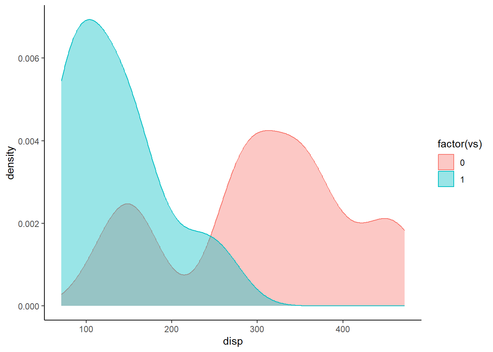

Центр распределения — то одно единственное число, которое описывало, характеризовало бы выборку. Подробнее о данной теме расписано в посте о мерах центральной тенденции. Когда мы производим сравнения, то мы либо проверяем гипотезу о равенстве математических ожиданий (равенство средних), либо проверяем гипотезу о равенстве медиан (на самом деле не совсем медиан).
2 Парные и независимые выборки
Прежде, чем производить сравнение, мы должны определить, являются ли наши выборки зависимыми или независимыми.
Парные (зависимые) выборки — это те наблюдения, которые связаны между собой, например уровень сахара в крови у группы до принятия препарата и после, продажи менеджеров до тренинга и после.
Независимые выборки — каждое наблюдение соответствует отдельному объекту, то есть измеряет разные объекты.
Чтобы указать, что выборки независимы, то указываем paired = FALSE, а если выборки зависимы, то paired = TRUE. По умолчанию стоит функция paired = FALSE (в R вообще по умолчанию во многих функциях аргументы имеют значение FALSE).
3 T-test
Если центром распределения выбрано среднее арифметическое, используем критерий Стьюдента.
Определяется следующей формулой t.test(x, y, alternative = "two.sided", paired = FALSE, var.equal = FALSE), если нам нужно сравнить среднее не двух числовых переменных, а одну числовую переменную по группирующей переменной с двумя значениями, то указываем x~y.
Ранее было обсуждено, что значит paired, но что такое var.equal? var.equal указывает на то, равны ли дисперсии или нет. Если мы это выясним, то мы “очень поможем” нашему тесту.
3.1 Гипотеза о равенстве дисперсий
Данная гипотеза проверяется с помощью ряда тестов (F-test of equality of variances, Bartlett`s test, Levene`s test), однако наиболее эффективными, ввиду своей робастности, являются Fligner-Killen test и Brown-Forsythe test.
\(H_0:\) Дисперсии равны
Реализуем оба теста в R:
df <- mtcarsfligner.test(disp~factor(vs), df)
Fligner-Killeen test of homogeneity of variances
data: disp by factor(vs)
Fligner-Killeen:med chi-squared = 3.2564, df = 1, p-value = 0.07114
# install.packages("onewaytests") если пакет не скачанlibrary(onewaytests)bf.test(disp~factor(vs), df)
Brown-Forsythe Test (alpha = 0.05)
-------------------------------------------------------------
data : disp and factor(vs)
statistic : 35.30207
num df : 1
denom df : 26.97694
p.value : 2.476526e-06
Result : Difference is statistically significant.
-------------------------------------------------------------
Прагматично использовать оба теста, после чего, при наличии различных результатов, произвести дополнительные проверки. В нашем случае результаты отличаются, Fligner-Killen test показал, что гипотеза о равенстве дисперсий не отклоняется, а Brown-Forsythe test имеет \(\alpha < 0.05\), что говорит о том, что основную гипотезу о равенстве дисперсий стоит отклонить. Литература говорит о том, что оба тесты считаются робастными, а если посмотреть на ядерную оценку плотности переменной disp, где цветом выделены значения для vs, то распределение далеко от нормального и требует устойчивых тестов:
library(ggplot2)ggplot(data = df)+theme_classic()+geom_density(mapping =aes(disp, fill =factor(vs),colour =factor(vs)), alpha =0.4)

Равенство дисперсий - вопрос очень дискуссионный, на самом деле есть устойчивая практика игнорировать данный этап анализа и считать, что дисперсии не равны, недаром в R по умолчанию стоит метод теста Уэлча. Какими бы устойчивыми методами бы не были Fligner-Killen test и Brown-Forsythe test, не допустить ошибку при настолько ассиметричном распределении достаточно тяжело.
3.2 Односторонние и двусторонние тесты
Отлично, осталось определиться с тем, что указать в alternative. “two.sided” мы указываем, если наша альтернативная гипотеза заключается только в неравенстве средних, то есть \(H_0: x = y\), а \(H_1: x \not= y\). Но что делать, если наша альтернативная гипотеза - это \(H_1: x > y\) или \(H_1: x < y\)? Необходимо указать в alternative значение “less” для <, или “greater” для >. В нашем случае не принципиально, какое направление указать, так что оставим “two.sided”.
3.3 Реализация t-test
Осталось узнать результаты t.test:
t.test(disp~vs, alternative ="two.sided", paired =FALSE, var.equal =FALSE, data = df) # считаем, что дисперсии не равны, исходя из bf.test
Welch Two Sample t-test
data: disp by vs
t = 5.9416, df = 26.977, p-value = 2.477e-06
alternative hypothesis: true difference in means between group 0 and group 1 is not equal to 0
95 percent confidence interval:
114.3628 235.0229
sample estimates:
mean in group 0 mean in group 1
307.1500 132.4571
# из интересного, аналогичный результат можно воспроизвести следующей конструкцией, которая реализуется без ~t.test(df$disp[df$vs ==0], df$disp[df$vs ==1], alternative ="two.sided", paired =FALSE, var.equal =FALSE)
Welch Two Sample t-test
data: df$disp[df$vs == 0] and df$disp[df$vs == 1]
t = 5.9416, df = 26.977, p-value = 2.477e-06
alternative hypothesis: true difference in means is not equal to 0
95 percent confidence interval:
114.3628 235.0229
sample estimates:
mean of x mean of y
307.1500 132.4571
В результате получаем p-value < \(0.05\), а значит основная гипотеза о равенстве средних отвергается, то есть средние значения переменной disp в группе 0 и группе 1 переменной vs не равны.
RobustBF
Если дисперсии не равны, то неявно в R используется тест Уэлча. На самом деле, можно произвести более надежную процедуру. Для выполнения надежного t-критерий Уэлча (Robust Welch’s Two Sample t-Test) для двух выборок, чтобы проверить равенство средних значений двух симметричных с длинным хвостом (LTS) распределений, когда дисперсии не равны, необходимо установить и подключить пакет “RobustBF” и воспользоваться функцией RW:
# install.packages("RobustBF") если не установлен пакетlibrary(RobustBF)RW(df$disp[df$vs ==0], df$disp[df$vs ==1]) # конструкция функции RW не поддерживает ~, так что осуществить проверку предыдущих гипотез можно только так
Robust Welch's Two Sample t-Test
data: y1 and y2
RW = 6.3073, df = 26.737, p-value < 2.2e-16
alternative hypothesis: true difference between in means is not equal to 0
sample estimates:
mean of y1 mean of y2 sd of y1 sd of y2
309.4704 129.5264 105.6151 55.4811
p-value < \(0.05\), основную гипотезу о равенстве средних стоит отвергнуть. Результат идентичен тесту Уэлча.
3.4 Если данные существенно отклоняются от нормального
Т-критерий Стьюдента работает, когда у нас каждая из выборок либо имеет нормальное распределение, либо несущественно отличается от нормального. Если распределение не нормально, а отклонение от нормального существенное, то есть 3 пути:
Все как в случае нормальности, если выборка большая (\(n > 30, 300\)), то среднее арифметическое, в силу центральной предельной теоремы, будет иметь примерно нормальное распределение и всё сработает. Что значит большая? Есть литература, которая говорит больше 20 наблюдений (едва ли это большая выборка!), но стоит за минимум брать больше 300 наблюдений.
Все же сравнивать медианы (Mann-Whitney U test)
Преобразовать данные к нормальному виду (рискованный метод!)
Первый путь кажется достаточно бесперспективным и идти по нему не стоит, однако порой можно встретить примеры, когда поступают именно так (например, лично я прямо сейчас проводил t.test в данном посте, несмотря на распределение групп, так как моей задачей было показать, как применить метод сравнения средних, а не получить осмысленный результат).
Второй путь наиболее привлекателен, о нем будет сказано далее более подробно.
Третий путь может считаться достаточно рискованным, однако в определенных задачах покажет достаточную эффективность. Более подробно преобразованию переменных я посвятил отдельный пост.
4 Критерий Манна-Уитни
Если центром распределения выбрана медиана, используем тест Манна-Уитни. Основателем теста является Вилкоксон, так что его фамилия часто встречается в названии теста, например Wilcoxon rank-sum test. В R тест как раз и назван в честь Вилкоксона, выполняется с помощью функции wilcox.test
Предупреждение
О единицах измерений
Критерий Манна-Уитни основан на рангах, он не учитывает насколько больше/меньше \(X\) чем \(Y\), не учитывает величины наблюдения
Тот факт, что критерий основан на рангах, позволяет игнорировать распределение и наличие выбросов.
Важно!
Критерий Манна-Уитни не проверяет гипотезу о равенстве медиан.
Имеются две выборки случайных велечин \(X\) и \(Y\).
Основная гипотеза: \(P(X>Y)=P(X<Y)\), то есть вероятность того, что \(X\) больше \(Y\) и вероятность того, что \(X\) меньше \(Y\) одинаковая.
Альтернативная гипотеза: \(P(X>Y)\neq P(X<Y)\)
Мы проверяем “как часто \(X\) больше/меньше \(Y\)”. Если у нас одинаково часто \(X\) больше \(Y\), и \(Y\) больше \(X\), то нулевая гипотеза не отвергается.
Тут важно уточнить то, что хоть и говорят о сравнении медиан, это не совсем правильно. Например, посмотрим на случай, когда медианы в точности одинаковы:
При этом основную гипотезу при \(\alpha = 0.05\) мы не отвергаем, так как p-value < \(\alpha\):
Wilcoxon rank sum test with continuity correction
data: new_df$value by new_df$group
W = 1949.5, p-value = 0.02556
alternative hypothesis: true location shift is not equal to 0
Еще раз, строго говоря, мы не сравниваем именно медианы, но неоднократно, когда применяют тест Манна-Уитни, даже в статистической литературе, говорят о сравнении медиан.
4.1 Односторонние и двусторонние тесты
Указываем в alternative “two.sided”, если наша альтернативная гипотеза заключается только в том, что вероятности отличаются, то есть \(H_0: P(X>Y)=P(X<Y)\), а \(H_1: P(X>Y)\neq P(X<Y)\). Но что делать, если наша альтернативная гипотеза - это \(P(X>Y) > P(X<Y)\) или \(P(X>Y)< P(X<Y)\)? Необходимо указать в alternative значение “less” для <, или “greater” для >.
4.2 Точное вычисление p-значения
В формуле wilcox.test мы можем указать exact, который будет либо TRUE, либо FALSE. Если мы поставим TRUE, то это займет больше времени для вычисления, так как будут учитываться более точная формула, которая учитывает, например, сортировки. Лучше всегда ставить TRUE, и если это займет слишком много времени (которое приносит вам неудобства), то стоит поставить FALSE.
4.3 Реализация теста Манна-Уитни
Итоговая реализация теста в R выглядит следующим образом, воспользуемся уже знакомым датафреймом df:
wilcox.test(disp~vs, alternative ="two.sided", paired =FALSE, exact =TRUE, data = df)
Wilcoxon rank sum test with continuity correction
data: disp by vs
W = 232, p-value = 6.067e-05
alternative hypothesis: true location shift is not equal to 0
В результате получаем p-value < \(0.05\), а значит основная гипотеза о том, что вероятности того, что значение disp для vs = 0 и значения disp для vs = 1 равны, отвергается. Мы можем говорить о том, что “локальное смещение” disp отличается между группами с vs = 0 и vs = 1.